Customer Data Management — The Golden Record
Before any deal can be sold, the customer data underneath it has to be trustworthy. This 15-panel storyboard follows one duplicate-ridden account through Oracle Customer Data Management — duplicate identification, survivorship, Dun & Bradstreet enrichment, corporate hierarchy and ongoing stewardship — until it becomes a single golden record James can actually sell from.
The Storyboard
📱 On mobile? Pinch to zoom on any panel to read the speech bubbles and labels clearly.
1The Opportunity
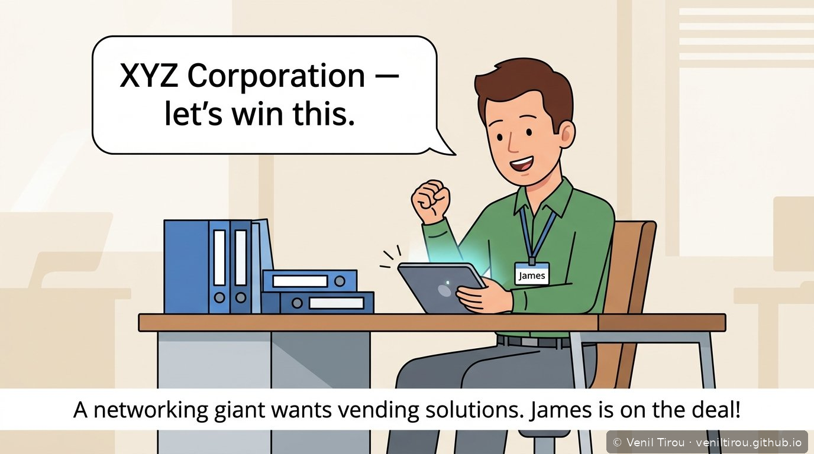
A networking giant wants vending solutions. James is on the deal!
2The Duplicate Problem
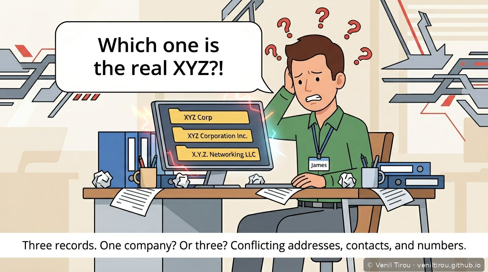
Three records. One company? Or three? Conflicting addresses, contacts, and numbers.
3Enter the Data Steward
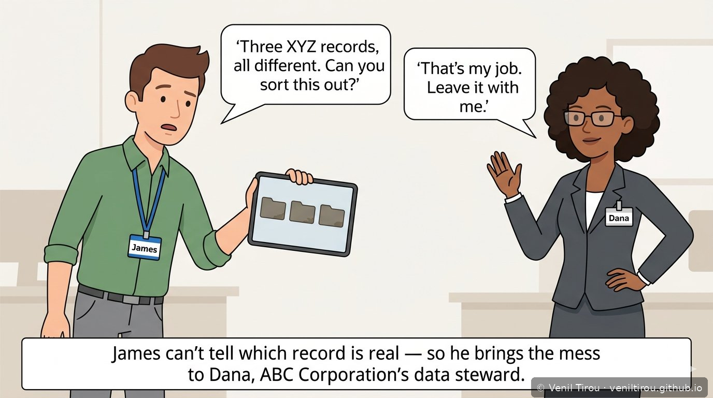
James can't tell which record is real — so he brings the mess to Dana, ABC Corporation's data steward.
4The Customer Hub
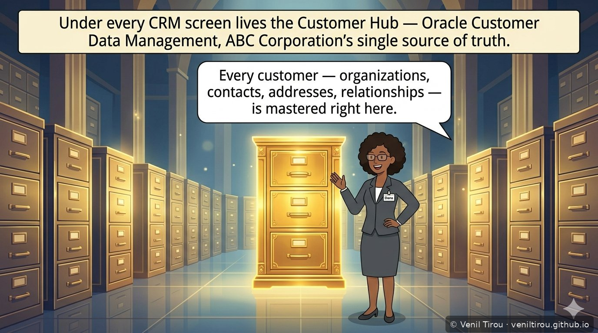
Under every CRM screen lives the Customer Hub — Oracle Customer Data Management, ABC Corporation's single source of truth.
5Duplicate Identification
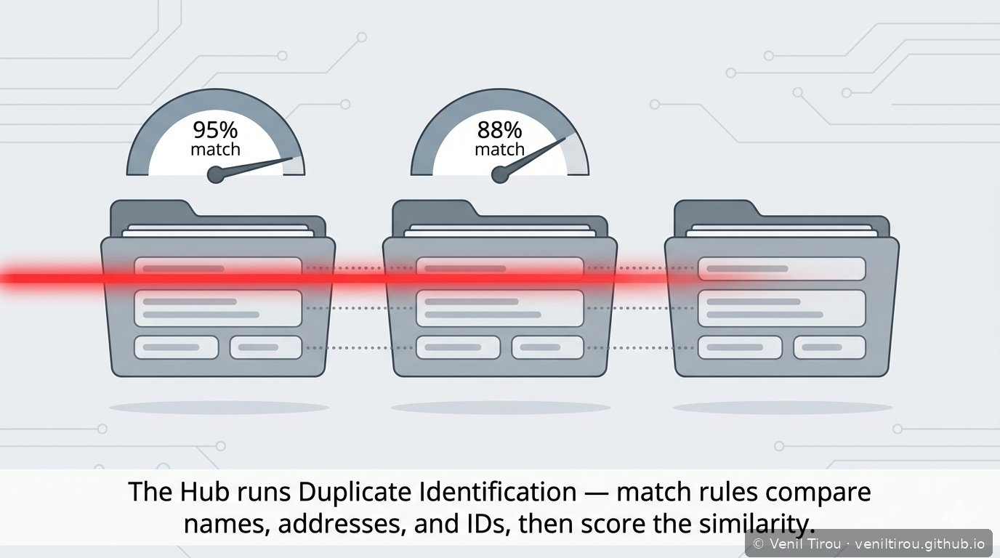
The Hub runs Duplicate Identification — match rules compare names, addresses, and IDs, then score the similarity.
6Auto-Merge vs. Human Review
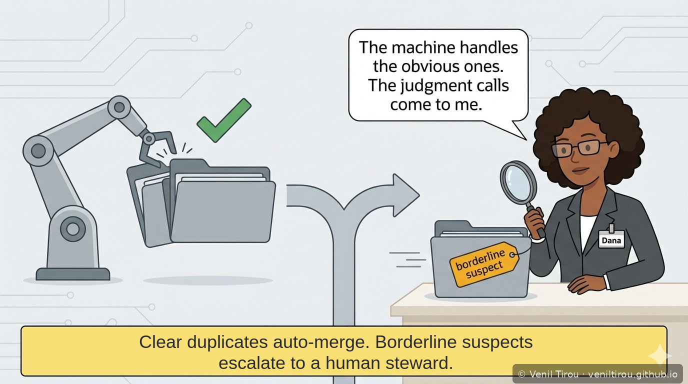
Clear duplicates auto-merge. Borderline suspects escalate to a human steward.
7Survivorship & the Golden Record
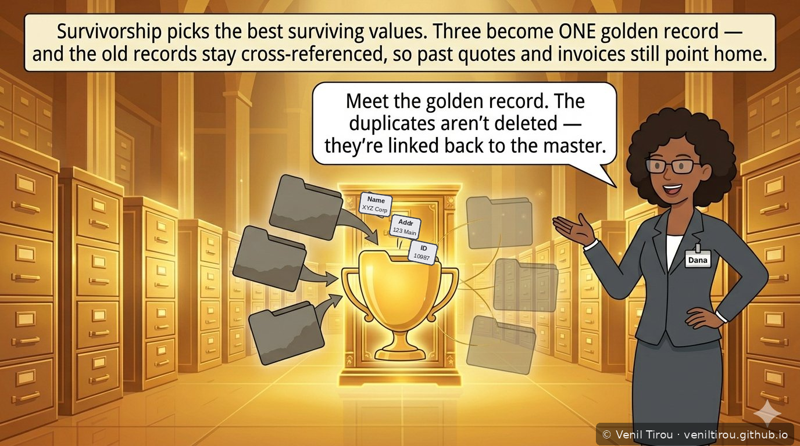
Survivorship picks the best surviving values. Three become ONE golden record — and the old records stay cross-referenced, so past quotes and invoices still point home.
8Enrichment (Dun & Bradstreet)
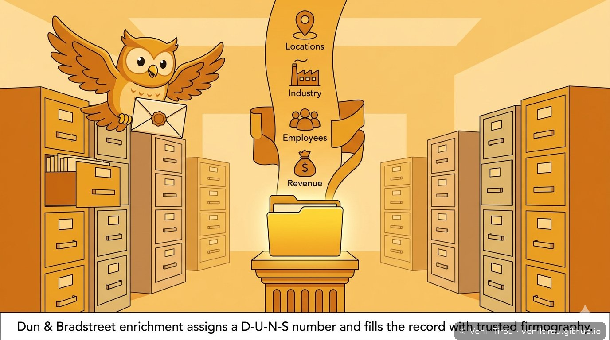
Dun & Bradstreet enrichment assigns a D-U-N-S number and fills the record with trusted firmography.
9Merge vs. Link
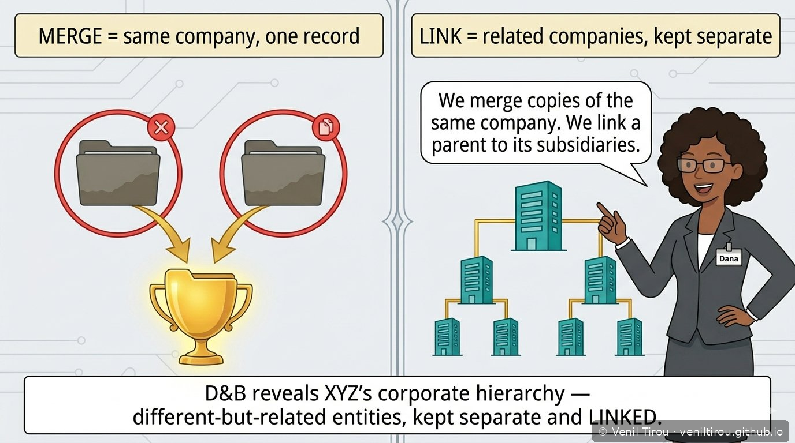
D&B reveals XYZ's corporate hierarchy — different-but-related entities, kept separate and LINKED.
10Continuous Data Stewardship
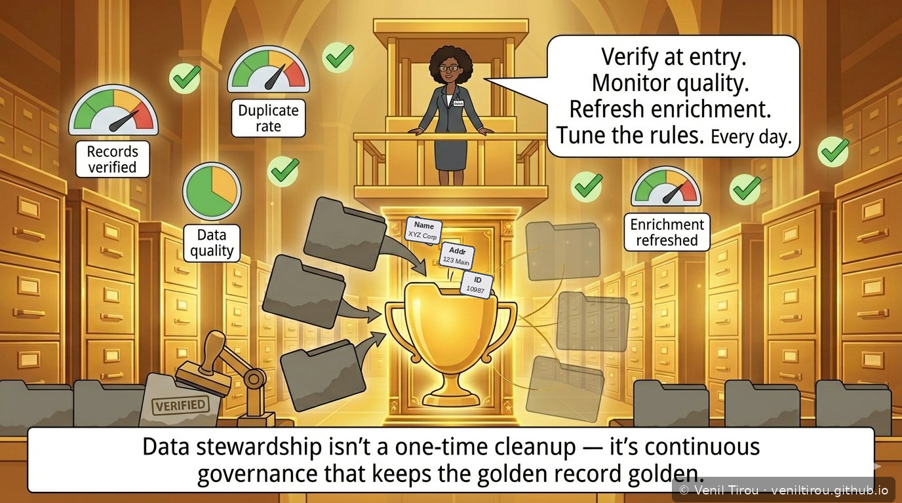
Data stewardship isn't a one-time cleanup — it's continuous governance that keeps the golden record golden.
11The Golden Record Handoff
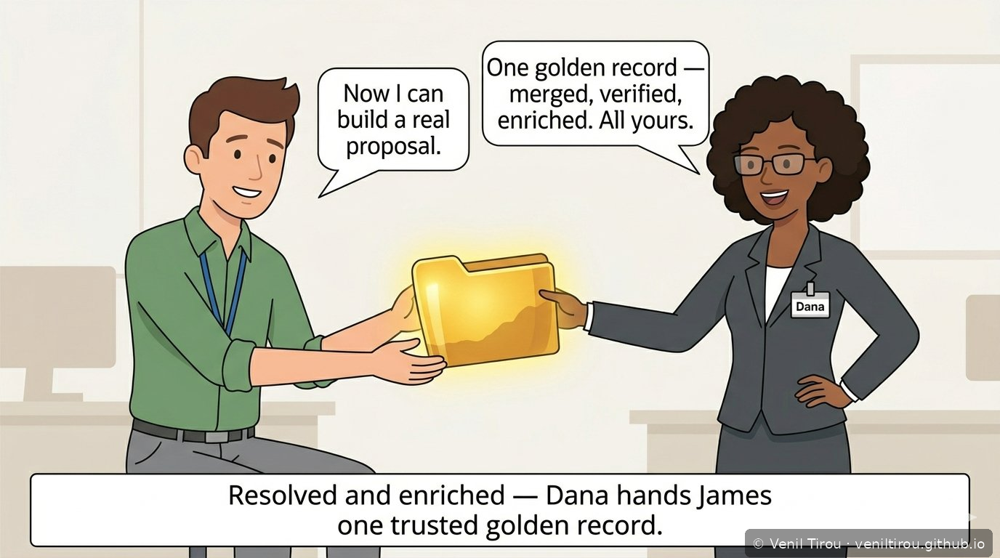
Resolved and enriched — Dana hands James one trusted golden record.
12One Clear Picture
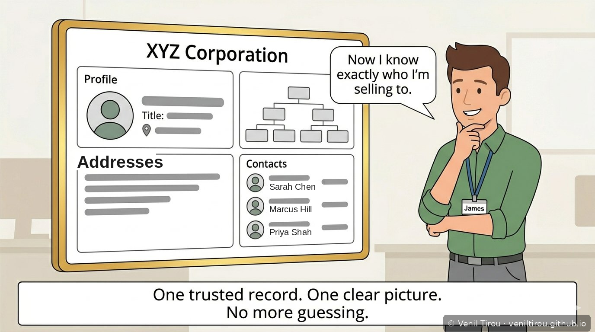
One trusted record. One clear picture. No more guessing.
13Sizing the Opportunity
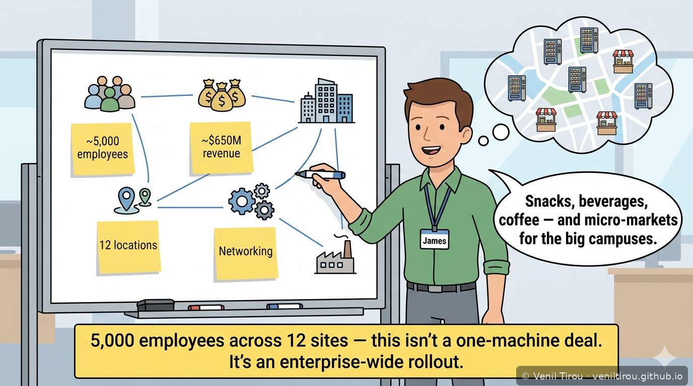
5,000 employees across 12 sites — this isn't a one-machine deal. It's an enterprise-wide rollout.
14Land & Expand
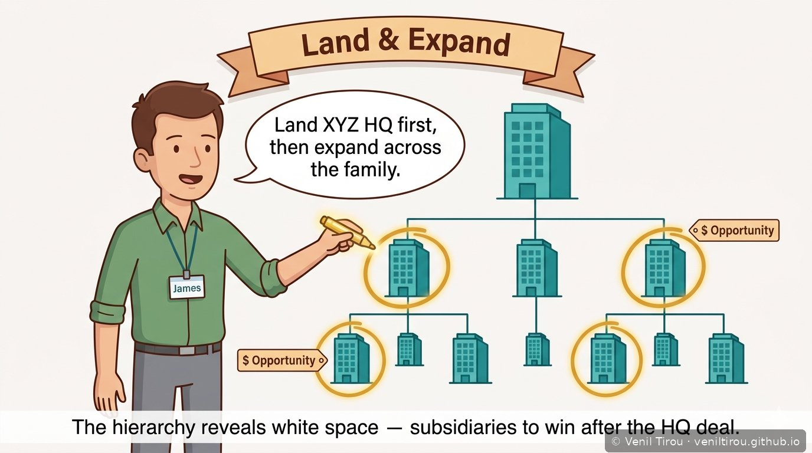
The hierarchy reveals white space — subsidiaries to win after the HQ deal.
15The Close
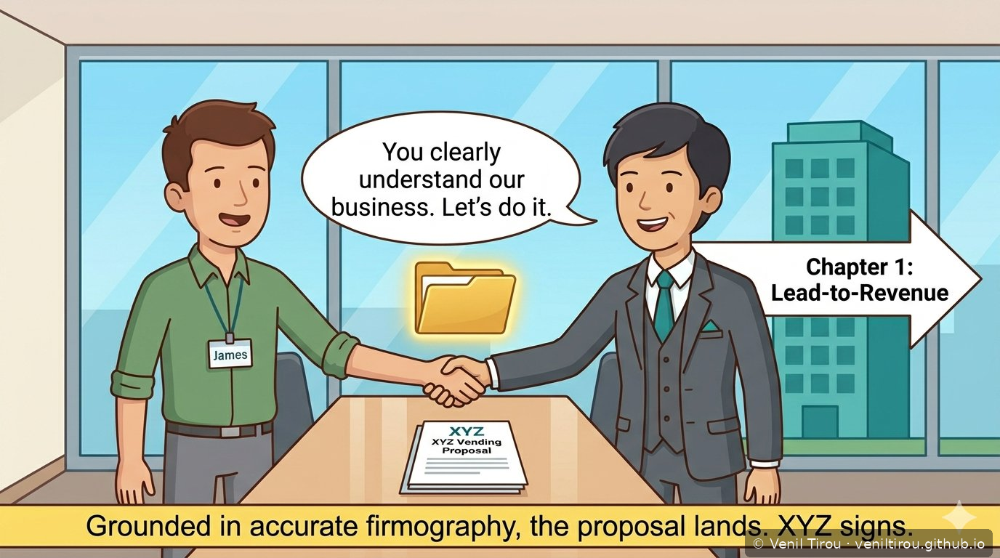
Grounded in accurate firmography, the proposal lands. XYZ signs.
Why This Chapter Matters
Concepts Covered
| Concept | What it means | Panel |
|---|---|---|
| Duplicate identification | Match rules compare key fields and score how likely records are the same. | 5 |
| Match scoring | A confidence percentage that drives the merge decision. | 5–6 |
| Auto-merge vs. escalation | High-confidence matches merge automatically; borderline cases go to a human steward. | 6 |
| Survivorship | Choosing the best surviving value for each field across duplicates. | 7 |
| Golden record | The single mastered record that represents the customer. | 7, 11, 12 |
| Cross-reference | Old duplicate records are linked, not deleted, so history still resolves. | 7 |
| Enrichment / firmography | Third-party data — locations, industry, employees, revenue — added to the record. | 8 |
| D-U-N-S number | Dun & Bradstreet's unique company identifier. | 8 |
| Merge vs. link | Merge = same company into one record; link = related entities kept separate but connected. | 9 |
| Corporate hierarchy | Parent/subsidiary structure that reveals expansion opportunities. | 9, 14 |
| Data stewardship / governance | Ongoing verification, monitoring and tuning that keeps data trustworthy. | 10 |
| Land & expand | Win the HQ first, then grow across the corporate family. | 14 |